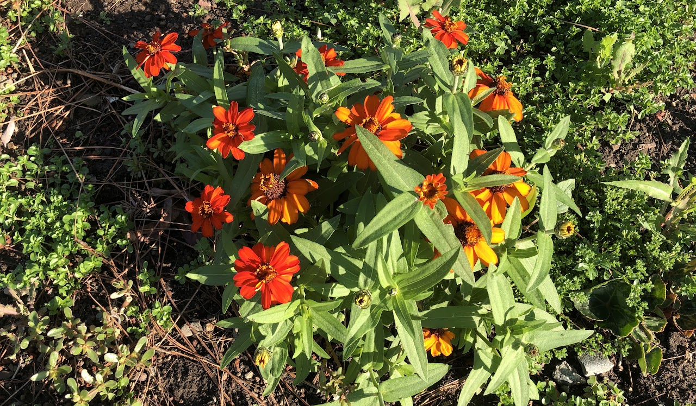

Live → Blog
November 1, 2020

In my teen years, I admired Lil Wayne for his lyricism. He once rapped, "Every finish line is the beginning of a new race." That perfectly sums up my October: a mix of beginnings and endings. It has been a fascinating experience to hold both joy and sorrow simultaneously, as has been to hold both excitement and fear. In the midst of all this transitional turmoil, I have never felt more alive. To live is to be present in all the highs and the lows of life. October made me realize the value of the relationships I have in my life.
I begin with my ongoing job search. On the one hand, I continue to enjoy interviewing with companies and demonstrating my problem solving competence. It is fulfilling to discover that my education has not been entirely useless as I adapt various tools I have learned over the years to solve real world problems. This affirms the choices I made with respect to my field of study. That notwithstanding, the recruitment process is brutal and heartbreaking. I used to think there was no rejection more painful than that of your crush not liking you back, but I was wrong. Outright rejections are disappointing, but not painful. Being rejected by a company after multiple rounds of interviews is the worst. The more rounds I complete with a company, the more emotionally invested I become and the worse the rejection feels. But as a wise person remarked, we have to feel the hurt, rise up, and learn to love again. As I love again, I have a good feeling about my candidacy at one of the places I am hoping to work at. Fingers crossed...
Interpersonal relationships have mattered a lot this year, especially in the context of the pandemic and the associated isolation. I was reminded during the month of October that I am not entitled to my friends, it is a privilege to have access to them. A privilege that I am deserving of, but not necessarily entitled to. It has been a mental breakthrough to separate the idea of entitlement to people's attention and affection from deserving their attention and affection. They can and should decide when and how to give that attention and affection. As I navigate numerous transitions in my life, my heart is full of gratitude for those friends whose attention and affection eases the process: from those helping me prepare for my job interviews, to those sitting with me through heartbreaking moments. Similarly, I realize that it is a privilege for others to have access to my attention and affection. As I continue to learn of the importance of asserting and respecting boundaries in healthy relationships, I feel empowered to know I can choose who gets my attention and affection. It might seem trivial, but the implications of this for my life are profound.
Familial relationships have also featured a lot in recent months. One of the major transitions I am having to navigate has to do with the aging and slow demise of some of the people closest to my heart. On that front, October has been a heart breaking month. I have never felt as powerless as I do being so far from home and unable to at least do my part in caring for them and making them as comfortable as possible during this last phase of their journey. Especially, with respect to my mother, who has sacrificed a whole lot and more for my comfort and success. But of course, what would I do if I were home? It is not like I would be able to do what my sister does - for which I am ashamed. Questions of disease and end of life care make being a nomad a tough way to live. But the alternative is no better. I continue to reflect on the tradeoff between the interests of the collective and of the self.
I end this update on a positive note - October came with the wedding of one of my favorite people in the whole world: JC. I would not have missed it for anything in the world. You should have been there and seen how beautiful she was. My heart is still full from the celebration. In part because I have witnessed most of the journey from right about its beginning, throughout its evolution up until the wedding. Of course marriage is just another beginning. October was the bud to what might be a beautiful love story, inshallah. I chose a photo of autumn flowers because even when the world gets colder, beauty can still emerge. I have a good feeling about that journey. Here is to November and all that it has to usher in.
← Return to Blog